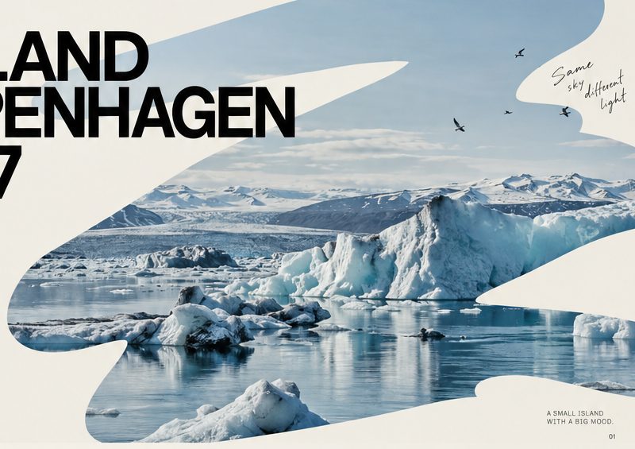
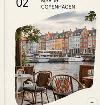
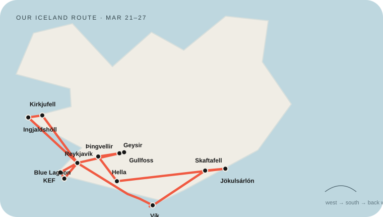
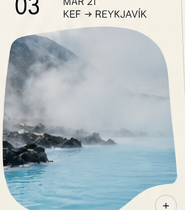
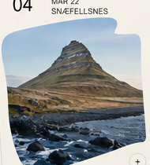
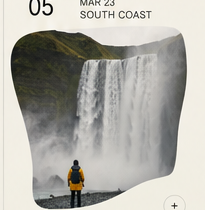
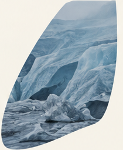
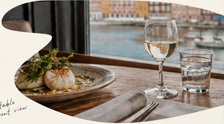

01
MAR 18
SFO → CPH
Overnight flight.
Nordic design streets → blue ice, black sand, geothermal water and good food. A travel journal built to be useful on the road.


COPENHAGEN · DESIGN + DAILY JOYHomepage images are now data-driven. When your hotel, food and trip photos are ready, we can add or replace them without redesigning the page.
A design city first, then six nights on Iceland’s west + south route, then one last Copenhagen evening before flying home.
Nyhavn · HAY · design shops · slow city wandering.
CPH 8:15 AM → KEF 10:50 AM. Blue Lagoon on arrival.
Snæfellsnes · South Coast · blue ice · Golden Circle.
One last dinner + sleep, then CPH → SFO.
The route keeps the trip focused on the places we actually care about. The detailed Trip page now includes this map, each day’s route, image, driving estimate, stay, food stop and practical notes.

Overnight flight.

KEF → geothermal soak → Reykjavík.

Kirkjufell + Ingjaldshólskirkja.

Black sand + Skaftafell.

Ice cave + Jökulsárlón + Diamond Beach.
Restaurants · cafés · bakeries · supermarkets · food map along the whole route.
OPEN FOOD PAGE →